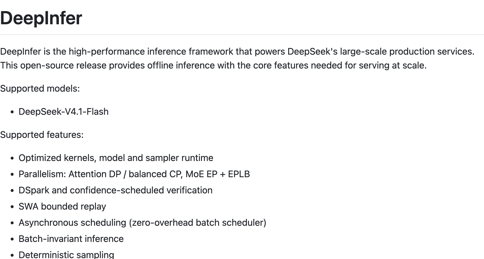
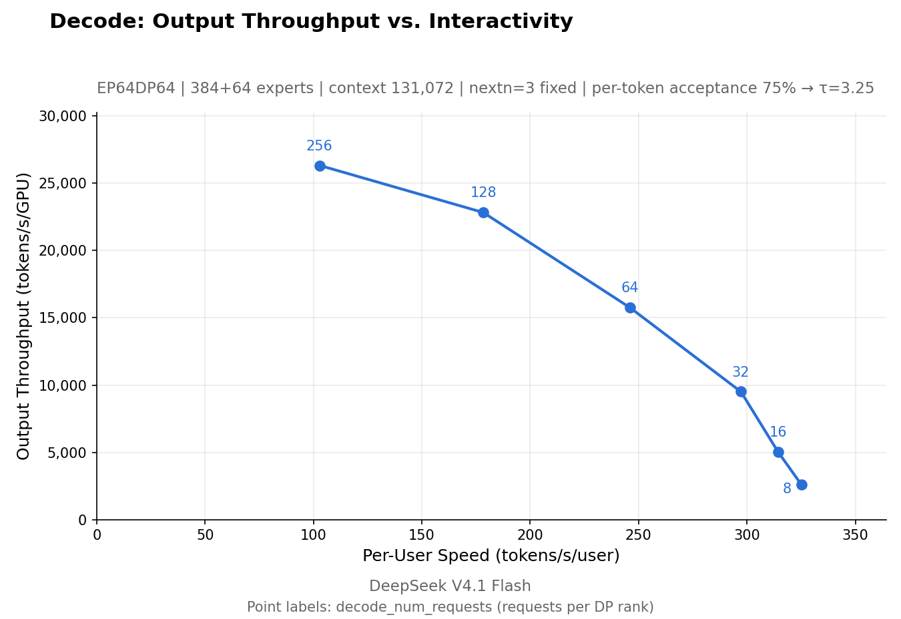
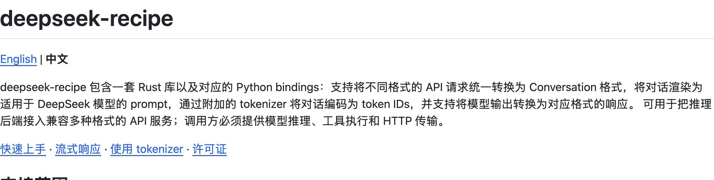
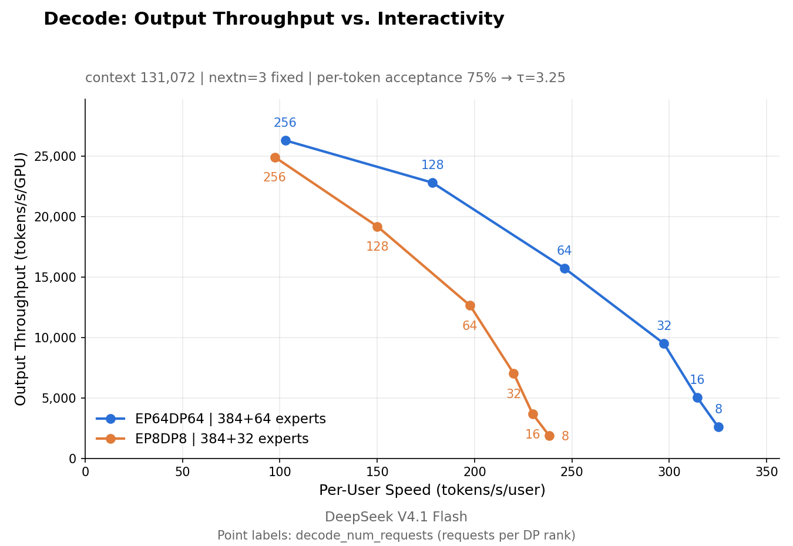

DeepSeek 这次放出来的东西，名字里没有新模型，也没有一个可以马上聊天的新入口。打开仓库，迎面而来的是推理、调度、通信和缓存。对大多数用户来说，这些词离聊天框有点远；可当回答迟迟不出现、长任务越跑越贵时，它们又会以最直接的方式回到面前。
近日，DeepSeek 公开了推理框架 DeepInfer，以及与之配套的 deepseek-recipe，并通过部署问答解释 V4.1 Flash 背后的系统设计。仓库记录显示，DeepInfer 的初始提交出现在 10 月 20 日。相比再发布一张模型成绩单，这次公开更像把机器后面的盖板打开，让外界看看那些能力如何被组织起来，交到大量用户手中。
于是，“把印钞机开源了”成了一个很容易理解的说法：既然这是支撑线上服务的技术，拿到它，是否也就拿到了 DeepSeek 的效率秘诀？真实情况比这个比喻更有意思。公开代码里有能运行的推理核心，有连接模型和应用的处理组件，也有仍未完整公开的服务环节。它交出来的是一批具体的工程成果，以及这些成果怎样配合的线索。

图 1｜官方 README 开头即说明：此次开源提供离线推理及规模化服务所需的核心特性。
这次公开的，处在模型和服务之间
我们通常通过两个入口认识大模型：一个是下载权重，一个是调用 API。前者告诉我们模型可以被拿走部署，后者让我们直接使用已经运行起来的能力。二者之间有一段相当长的路：权重装到什么设备上，多个请求怎样一起计算，数据如何在设备之间移动，哪些历史计算可以复用，以及如何把结果持续返回给用户。
DeepInfer 主要处理这段路上的推理执行工作。它支持 DeepSeek V4.1 Flash，把一批经过优化的底层计算组件、并行执行方式和调度机制放进同一个框架。使用者可以从中研究一次推理怎样执行，也可以在符合条件的环境中运行离线示例、复现相应测试，再判断哪些部分适合自己的部署。
“离线”在这里说的是运行形态：无需先搭出一个完整的、面向外部请求的在线服务，也能提交输入并得到模型输出。对准备研究或评估框架的人，这提供了一个相对清楚的起点。它与普通用户熟悉的“断网也能用”并不是同一个问题，运行所需的模型文件、软硬件和依赖依然需要准备。
官方列出的硬件支持是 NVIDIA SM100 GPU 和华为 Ascend 950 NPU，软件环境也有明确要求。这说明它带着具体部署背景而来，不能把“开源”直接理解为“所有电脑都能跑”。一套为特定模型和设备深度优化的实现，最先受益的往往是具备相近条件的研究者与部署团队。其他团队可以读代码、借设计，也可以继续做适配，但这些工作不会因为许可证开放就自动消失。
随框架一起公开的 recipe，则靠近请求进出模型的两端。两项工程承担的职责不同，许可证也不同：DeepInfer 使用 Apache 2.0，deepseek-recipe 使用 MIT。它们共同补充了模型公开之后的工程材料，却没有把整个在线平台打包成一个安装按钮。这个范围在 README 中写得很直白：完整服务还需要 KV 缓存系统、视觉编码与输入处理和输出生成阶段的分离部署，以及跨数据并行副本的请求负载均衡。
这些名词暂时记不住也没关系。顺着一个请求走一遍，就能看出为什么一份模型文件之外，还需要这么多东西。
同一个回答，前后两段工作的脾气不同
假设你让模型阅读一份很长的资料，再写一段简短结论。生成结论之前，模型先要处理输入，建立后续生成要使用的中间状态；随后才是一点点向外输出。这两个阶段通常称为 Prefill 和 Decode。输入越长，前一阶段的工作越重；输出不断延伸，后一阶段就要持续占用资源。它们虽然属于同一次回答，却有不同的计算特点。
如果服务只有少量请求，把所有事情放在一起做未必有问题。但当短问题、长文档和持续运行的 Agent 同时涌进来，共用资源就会产生新的取舍。一个用户希望立刻看到第一个字，另一个用户正在等待长篇输出，后台还有任务带着大段历史上下文再次发来请求。只盯着某一次计算有多快，很难解释整个平台为什么会排队。
DeepSeek 公布的系统架构，把视觉编码、Prefill 和 Decode 拆开组织，让不同阶段按各自的负载特点使用资源。这张图展示的是生产系统的整体设计，覆盖面大于此次公开代码的范围。读图的重点是看到请求在何处被处理、计算结果在何处复用，以及各类资源为什么需要分工，而非把每个方框都理解为已经交付的独立软件包。

图 2｜V4.1 Flash 推理系统的整体架构。图中包含缓存和负载均衡等尚未完整开源的部分。
公开框架里的异步调度，解决的是更贴近执行现场的问题：设备在计算当前批次时，CPU 可以安排后续批次，让两类工作尽量重叠。否则，即使核心计算已经很快，前后衔接时的等待仍会吃掉一部分收益。文档把这一设计称为零开销批调度器，实际理解应落在调度与计算的重叠，而非整套服务从此没有管理成本。
性能之外，框架还支持按正则表达式、JSON Schema 或语法规则约束输出。设想一个应用要求模型返回订单字段，后面的程序需要读取金额、日期与状态；如果回答里夹进一段解释，程序就要另行处理。约束生成让输出更容易接进后续流程，但字段形式合规，仍需要与内容是否正确分开验证。它改善的是一项能力进入应用时的交付方式，也解释了为何推理框架的任务不止是提高每秒生成的字数。
另一个容易吸引注意的功能是推测解码。它先提出一段候选输出，再由模型验证，希望用更合适的计算组织方式加快生成。DeepInfer 的 DSpark 还利用置信度安排验证。这里的工程判断在于，先猜多少、怎样验证、为此多做的工作是否划算，需要与实际负载一起考虑；把候选段一味拉长，并不自然等于更快。
官方公开的测试也保留了这种条件意识：输入处理和输出生成分别展示结果，前者使用 4 张 SM100，后者使用 64 张，两项测试各自在一个高速互联域内进行。图上的吞吐与延迟，反映的是特定配置下的取舍。对准备部署的人，测试脚本与配置让这组结果有了继续验证的入口，远比抽出一个最高数字当宣传语更有用。

图 3｜输入处理阶段的吞吐与延迟，测试配置为 4 张 SM100。

图 4｜输出生成阶段的吞吐与单用户速度，测试配置为 64 张 SM100；与上一张图的设备数量不同。
对外界来说，这几项公开的意义已经相当具体：我们不再只看见最终报价和回答速度，还能顺着代码与测试材料，理解性能是怎样被组织出来的。某个优化是否适合另一种业务，仍需要实验，但实验有了可检查的对象。
那些不显眼的格式，也被单独拿了出来
与 DeepInfer 相比，recipe 没有那么容易被包装成性能故事。它的工作看起来很琐碎：接住不同格式的请求，把对话整理为模型需要的提示词和 token，再把输出还原成应用能够理解的响应。但只要做过模型接入，就很难把这些当成纯粹的边角料。
用户在聊天框里看见的是一段话，应用发出去的却可能包含系统要求、历史消息、图片、工具定义和生成参数。模型返回的也可能同时包含思考内容、正文和工具调用。它们有各自的角色和边界，不能简单拼成一条字符串。输入如何组织，会影响模型收到什么；输出如何解析，会决定应用接下来展示什么、执行什么。
recipe 的中文说明列出了 Messages、Chat Completions 和 Responses 等请求与响应格式。它先把这些不同入口转换成统一的对话表示，再处理 DeepSeek 模型所需的编码和输出解析。这让使用者可以参考官方公开的逻辑，而不必仅凭外部接口的表现，反推每个细节应该怎样处理。

图 5｜recipe 包括请求转换、提示词渲染、token 编解码与响应转换。
流式输出尤其能说明这类工作的价值。模型往往连续产生小块内容，应用一边接收，一边往界面上显示；某一小块可能还不足以组成完整的文字或工具参数。如果解析层过早宣布一段内容已经结束，前端显示与工具调用就可能出问题。用户看到的是“怎么又卡住了”或“为什么工具没执行”，原因却可能落在生成内容与应用协议的交接处。
公开这层逻辑，也有助于区分两类经常混在一起的问题：同一模型在第三方服务中表现不同，可能来自推理实现和生成设置，也可能来自提示词、工具定义或响应处理。现在至少有一部分处理方式可以对照。开发者能够缩小排查范围，先确认模型实际收到了什么、应用又把它的输出解释成了什么。
不过，recipe 的职责到这里有清楚的边界。它不负责替使用者运行模型，不执行模型提出的工具调用，也不包办 HTTP 服务。假如模型生成了一次查询数据库的请求，实际权限、执行程序和结果回传，仍由接入方安排。协议层的对齐也无法单独保证不同部署环境里的模型质量完全一致。
这项开放带来的便利，恰好在于可以拆开使用。一个团队未必准备采用整套 DeepInfer，却可能需要更可靠的 DeepSeek 协议接入；另一个团队已有自己的服务入口，也可以研究其中的编码与流式解析。开源组件开始有用，并不一定要等到别人完整复制原作者的系统。
过去散落的工具，现在出现了一条连接线
把这次仓库与此前的公开项目放在一起看，会发现 DeepInfer 还有另一层价值。以前读到 FlashMLA、DeepGEMM、DeepEP 或 3FS，大多数人需要先弄清每个名字负责什么。如今，框架和部署说明提供了一条连接线：某个底层组件为什么被需要，它被放进模型执行的哪个位置，又受到哪些上层设计的影响。
以 DeepGEMM 为例，它处理矩阵计算等核心运算。这样的代码与用户界面相距很远，但模型推理要大量执行这些运算，执行效率会直接影响设备花多少时间完成工作。FlashMLA 则围绕注意力计算提供高效内核。单独看时，它们像不同的性能工具；放进推理框架后，才能继续追问：某个阶段主要消耗在哪里，局部提速能给整个请求带来多少改善？
DeepEP 处理的是另一件事：混合专家模型里，相关数据如何在设备间分发、汇合。模型把不同输入交给不同专家处理，专家又分布在设备上，通信就成为计算的一部分。设备算得快，却一直等数据到齐，依然很难得到好结果。这也是为何算子优化与通信优化需要一起看。
官方问答还展示了不同专家并行规模下的测试。扩大参与范围，可以改变专家部分的访存与计算组织方式；与此同时，网络条件和负载是否均衡也会影响效果。所谓“把更多卡连起来”，背后包含具体的调度和数据移动问题。读者能够从这些材料中看到，扩展规模要解决什么，而不只是记下一个更大的设备数量。

图 6｜官方给出的 EP8 与 EP64 输出生成测试。该图用于说明特定配置下的并行策略差异，不能推成所有硬件与负载下的通用倍数。。
框架列举的依赖还包括 TileLang、TileKernels 和 DeepSelect。前两者涉及内核开发与实现，后者提供高效选择操作。不同项目有各自的维护者与贡献背景，不能因为被同一个框架使用，就把整个开源生态都算成一家公司的独立发明。对学习者更有价值的是顺着依赖关系阅读：哪些能力已有公共工具，哪些位置需要面向模型特性继续优化。
存储项目 3FS 则把视线带到了计算之外。大模型服务会产生可以复用的上下文中间状态，也就是 KV 缓存。把它们保存在哪里、保存多久，关系到后续请求能否减少重复计算。官方系统把共享存储纳入缓存设计，解释了为什么一项看起来更像基础设施的开源项目，会与推理效率发生联系。
设想一个持续处理任务的 Agent，几轮工作可能共享很长的背景材料。如果每轮都从头处理，输入成本会随着任务推进反复发生；如果能复用已有状态，就有机会省下部分工作。但状态需要占用空间，跨设备读取也需要时间，保存策略又会受到访问习惯影响。因此，模型架构、缓存和存储不能各自只追求一个局部最优。
部署问答给了一个很具体的例子：生产系统为 Agent 流量和聊天流量设置了不同的缓存保留时间，分别是三天与七天。官方的解释是，两类流量复用历史内容的分布不同，聊天流量有更长的命中尾部。一项看起来应该统一配置的基础设施参数，最后仍然与用户如何使用产品有关。别人可以借鉴这种分析方式，却不宜把两个天数原封不动地搬进业务：自己的用户隔多久回来，是否反复带着相同前缀，都会改变保存的收益。
这里无需把全部项目学会，才能理解这次开放。过去，外界拿到的是几种能力很强的工具；现在，多了一份能把工具放回工作位置的材料。即使最终采用别的推理框架，团队也能据此提出更具体的问题，而不必从“为什么别人跑得快”开始猜。
别人能拿走什么，得分开看
最直接的一批使用者，是条件接近的模型部署团队。他们可以研究执行路径，在指定硬件上测试吞吐和延迟，比较现有实现的差异，也可以检查某项优化对自身负载有没有帮助。源码和示例让讨论能够落到具体操作：输入多长、批次多大、采用什么配置，结果是否稳定，而不是只交换宣传材料上的结论。
研究者得到的则是一批贴近实际系统的问题。比如怎样让 CPU 调度与设备计算更好地重叠，怎样减少推测解码做了却没有带来收益的工作，以及同一输入放进不同批次时如何保持结果一致。这些问题没有新模型排行榜那么显眼，却与复现实验、定位故障和持续优化紧密相关。
DeepInfer 把批次不变性和确定性采样列为功能，并对启用条件作了说明，当前相关能力标注为 NVIDIA 平台支持。它们为比较实验提供了更可控的条件：如果只是换了一组同时运行的请求，结果就随之变化，开发者很难判断新版本究竟改进了什么。控制这类变量，有助于让优化结论更容易检查。
应用开发者可能更先用到 recipe。已有业务并不一定需要自建一套大规模推理服务，但在更换后端、接入工具或处理流式输出时，可以参考公开组件。尤其当产品依赖多轮对话与工具协作，接口能够接通只是开始，字段含义与输出边界一致，才方便继续组织业务流程。
再往外一层，是那些暂时不采用代码，却需要判断技术方案的人。他们能看到高吞吐背后的设备、通信和部署条件，从而更认真地区分“这个实现表现很好”与“我的业务用它也划算”。短请求、长上下文和后台批处理有不同诉求，一条性能曲线无法替所有产品做选择。开源材料提供的是判断依据，具体选择仍与业务有关。
这一点放在“印钞机”的说法旁边尤其重要。官方问答给出了生产集群的吞吐和收入指标，能够说明它所面对的规模，但收入并不是利润，也无法从一个数字里扣出硬件、网络、存储和维护的完整成本。别人拿到代码后，还会面对不同的设备价格、使用率和请求结构。工程经验可以被学习，经营结果无法随仓库一起下载。
同样，3FS 已经公开，也不意味着围绕它构建的完整缓存管理随之公开；框架支持专家负载均衡，也不等于整个线上请求路由已经齐备。前者在设备间协调专家工作，后者要把外部请求安排到合适的服务副本，两者处理不同层面的问题。把这些边界看清，团队才容易估算真正需要补上的工程。
一份可以继续读下去的工程材料
翻到 DeepInfer README 的致谢部分，还能看到几个熟悉的名字：项目最初主要建立在 vLLM 之上，并受到 SGLang 与 TensorRT-LLM 的启发。这为此次开源补上了很实际的背景：推理系统的进步，本来就发生在不断使用、修改和公开经验的过程中。一套生产实践回到公共仓库，会给其他实现提供新的对照对象。
它也让模型发布之后的那段时间变得更值得跟踪。模型权重公开时，人们首先关心能力；进入真实部署以后，问题逐渐细化为执行效率、协议兼容、设备适配和维护。这些环节有时会决定一项能力能否被稳定使用，却往往被“模型已经开源”一句话带过。DeepInfer 与 recipe 让其中一部分工作有了可以直接检查的实现。
官方还表示，未来 DeepSeek 模型的推理代码与后续性能优化，将继续在 DeepInfer 中公开。这是一项后续计划，眼下可以依据的是已经发布的代码与材料。如果它持续更新，外界便能进一步观察：模型改变时，推理系统怎样跟着变；一种优化进入实现后，哪些条件下得到收益，又留下哪些问题。
所以，这次最值得带走的，并不是“人人都拿到了同一台印钞机”。模型之外，那些过去很难被普通发布会讲清楚的工作，现在有一部分被摊开了：计算怎样安排，数据怎样流动，请求怎样变成模型输入，输出又怎样回到应用。有人会直接使用，有人会借走一段实现，也有人会据此改进另一套系统。
DeepSeek 没有把完整云服务变成一个现成副本，却交出了一份能够沿着代码继续追问的工程材料。对于真正准备把模型用起来的人，这已经比“我们做到了很高的效率”多走了一大步。